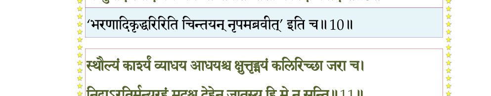
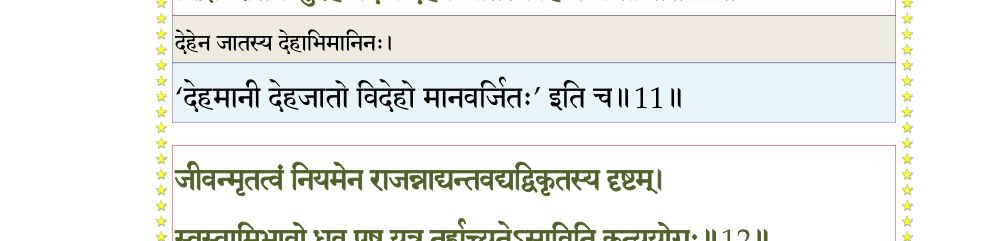
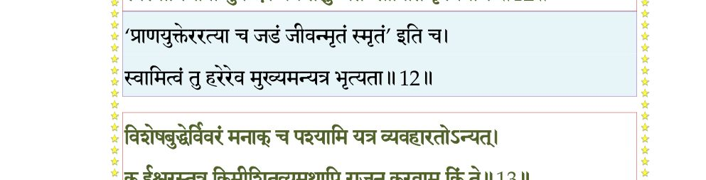
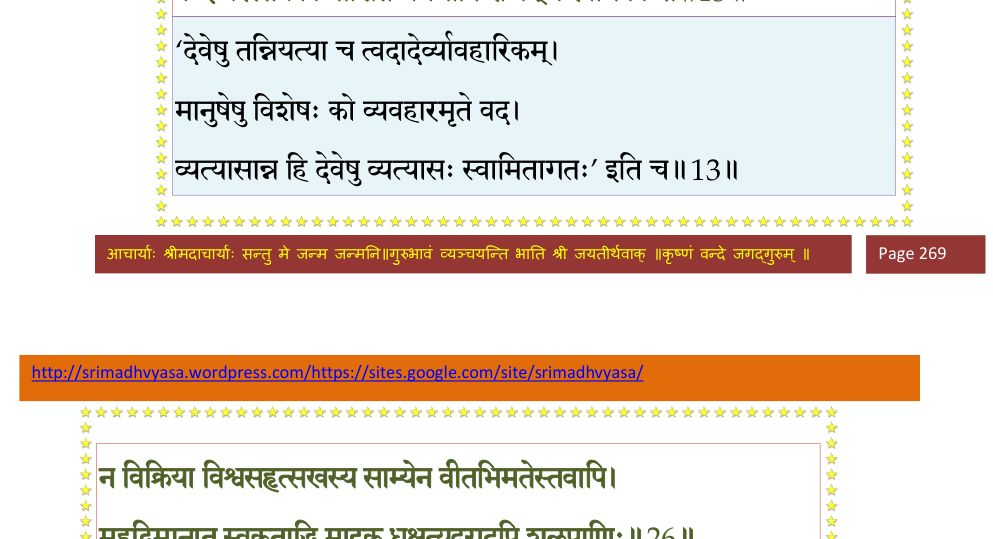
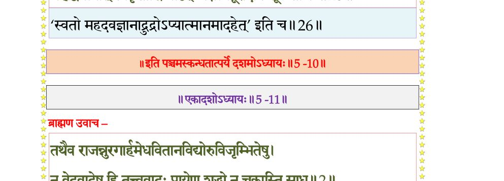

स्कन्ध 5 · अध्याय 10
श्लोक १
श्रीशुक उवाच–
अथ सिन्धुसौवीरपते रहूगणस्य व्रजत इक्षुमत्यास्तटे नद्या भगवन्तं कपिलऋषिं द्रष्टुं कस्मिंश्चिदाश्रमे स्थितं तत्कुलपतिना शिबिकावाहकपुरुषा-न्वेषणसमये दैवेनोपसादितः स द्विजवर उपलब्धः एष पीवा युवा संहन-नाङ्गः खरवत् धुरं वोढुमलमिति पूर्वविष्टिगृहीतैः सह गृहीतः प्रसभमतदर्ह उवाह शिबिकां स हि महानुभावः ।। १ ।।
अथ सिन्धुसौवीरपते रहूगणस्य व्रजत इक्षुमत्यास्तटे नद्या भगवन्तं कपिलऋषिं द्रष्टुं कस्मिंश्चिदाश्रमे स्थितं तत्कुलपतिना शिबिकावाहकपुरुषा-न्वेषणसमये दैवेनोपसादितः स द्विजवर उपलब्धः एष पीवा युवा संहन-नाङ्गः खरवत् धुरं वोढुमलमिति पूर्वविष्टिगृहीतैः सह गृहीतः प्रसभमतदर्ह उवाह शिबिकां स हि महानुभावः ।। १ ।।
श्लोक ३
यदा हि द्विजवरस्य युगमात्रावलोकानुगतेर्न समा पुरुषगतिस्तदा विषम-गतायां स्वशिबिकायां रहूगण उपधार्य पुरुषानधिवहत आह । हे वोढारः साध्वतिक्रमत किमिति विषममूह्यते यानमिति ।।
अथ त ईश्वरवचः सोपालम्भमुपाकर्ण्य तुर्याच्छङ्कितमनसस्तं विज्ञाप-याम्बभूवुः ।। ३ ।।
अथ त ईश्वरवचः सोपालम्भमुपाकर्ण्य तुर्याच्छङ्कितमनसस्तं विज्ञाप-याम्बभूवुः ।। ३ ।।
श्लोक ५
न वयं नरदेवप्रमत्ताः भवन्नियमानुपथाः साध्वेव वहामः अयमधुनैव नियुक्तोऽपि न द्रुतं व्रजति नानेन सह वोढुमिह वयं पारयाम इति ।।
सांसर्गिको दोष एव नूनमेकस्यापि सर्वेषां संसर्गिणां भवितुमर्हतीति निशम्य कृपणं वचो राजा रहूगण उपासितवृद्धोऽपि निसर्गेण बलात्कृत ईषदुत्थितमन्युरविस्पष्टब्रह्मतेजसं जातवेदसमिव रजसा तमसाऽऽवृत-मतिराह ।। ५ ।।
सांसर्गिको दोष एव नूनमेकस्यापि सर्वेषां संसर्गिणां भवितुमर्हतीति निशम्य कृपणं वचो राजा रहूगण उपासितवृद्धोऽपि निसर्गेण बलात्कृत ईषदुत्थितमन्युरविस्पष्टब्रह्मतेजसं जातवेदसमिव रजसा तमसाऽऽवृत-मतिराह ।। ५ ।।
श्लोक ६
अहो कष्टं भ्रातर्व्यक्तमुरुपरिश्रान्तो दीर्घमध्वानमेक एव ऊहितवान् सुचिरं नातिपीवा नातिसंहननाङ्गो जरसोपद्रुतो भवान्सखेनो एवापर एते सङ्घट्टिनः ।। ६ ।।
श्लोक ७
इति बहुविप्रलब्धोऽप्यविद्यया विहितद्रव्यगुणकर्माशयस्वचरमकलेवरेऽ-वस्तुनि संस्थानविशेषे अहंममेत्यनध्यारोपितमिथ्याप्रत्ययो ब्रह्मभूतस्तूष्णीं शिबिकामुवाह ।। ७ ।।
श्लोक ८
अथ पुनः स्वशिबिकायां विषमगतायां प्रकुपित उवाच रहूगणः किमरे त्वं जीवन्मृतोऽसि मां कदर्थीकृत्य भर्तृशासनमतिचरसि । प्रमत्तस्य ते करोमि चिकित्सां दण्डपाणिरिव जनतायाः यथा प्रकृतिं स्वां भजिष्य-सीति ।। ८ ।।
श्लोक ९
एवं बह्वबद्धमभिभाषमाणं नरदेवाभिमानिनं रजसा तमसाऽनुविद्धेन मदेन तिरस्कृताशेषभगवत्प्रियनिकेतं पण्डितमानिनं स भगवान् ब्राह्मणो ब्रह्मभूतः सर्वभूतसुहृदात्मा योगेश्वरचर्यायां नातिव्युत्पन्नमतिं स्मयमान इव विगतस्मय इदमाह ।। ९ ।।
श्लोक १०
ब्राह्मण उवाच–
त्वयोदितं व्यक्तमविप्रलब्धं भर्तुः स मे स्याद्यदि वीर भारः ।
गन्तुर्यदि स्यादधिगम्यमध्वा पीवेति चासौ न विदां प्रवादः ।। १० ।।
त्वयोदितं व्यक्तमविप्रलब्धं भर्तुः स मे स्याद्यदि वीर भारः ।
गन्तुर्यदि स्यादधिगम्यमध्वा पीवेति चासौ न विदां प्रवादः ।। १० ।।
भागवततात्पर्यनिर्णय

श्लोक ११
स्थौल्यं कार्श्यं व्याधय आधयश्च क्षुत्तृड्भयं कलिरिच्छा जरा च ।
निद्राऽरतिर्मन्युरहंमदश्च देहेन जातस्य हि मे न सन्ति।। ११ ।।
निद्राऽरतिर्मन्युरहंमदश्च देहेन जातस्य हि मे न सन्ति।। ११ ।।
भागवततात्पर्यनिर्णय

श्लोक १२
जीवन्मृतत्वं नियमेन राजन्नाद्यन्तवद्यद्विकृतस्य दृष्टम् ।
स्वस्वामिभावो ध्रुव एष यत्र तर्ह्यच्युतेऽसाविति कृत्ययोगः ।। १२ ।।
स्वस्वामिभावो ध्रुव एष यत्र तर्ह्यच्युतेऽसाविति कृत्ययोगः ।। १२ ।।
भागवततात्पर्यनिर्णय

श्लोक १३
विशेषबुद्धेर्विवरं मनाक् क्व पश्यामि यत्र व्यवहारतोऽन्यत् ।
क ईश्वरस्तत्र किमीशितव्यमथापि राजन्करवाम किं ते।। १३ ।।
क ईश्वरस्तत्र किमीशितव्यमथापि राजन्करवाम किं ते।। १३ ।।
भागवततात्पर्यनिर्णय

श्लोक १४
उन्मत्तमत्तजडवत्स्वसंस्थां गतस्य मे वीर चिकित्सितेन ।
अर्थः कियान् भवता शिक्षितेन स्तब्धप्रमत्तस्य च पिष्टपेषः ।। १४ ।।
अर्थः कियान् भवता शिक्षितेन स्तब्धप्रमत्तस्य च पिष्टपेषः ।। १४ ।।
श्लोक १५
श्रीशुक उवाच–
एतावदनुवादपरिभाषया प्रत्युदीर्य मुनिवर उपशमशील उपरतानात्म्य-निमित्तमुपभोगेन कर्मारब्धं व्यपनयन् राजयानमपि तथोवाह ।। १५ ।।
एतावदनुवादपरिभाषया प्रत्युदीर्य मुनिवर उपशमशील उपरतानात्म्य-निमित्तमुपभोगेन कर्मारब्धं व्यपनयन् राजयानमपि तथोवाह ।। १५ ।।
श्लोक १६
स चापि पाण्डवेय सिन्धुसौवीरपतिस्तत्त्वजिज्ञासायां सम्यक्श्रद्धयाऽधि-कृताधिकारः तद्घृदयग्रन्थिविमोचनं द्विजवच आश्रुत्य बहुयोगग्रन्थमतं त्वरयाऽवरुह्य शिरसा पादमूलमुपगतः क्षमापयन्विगतनरदेवस्मय उवाच रहूगणः ।। १६ ।।
श्लोक १८
कस्त्वं निगूढश्चरसि द्विजानां बिभर्षि सूत्रं कतमोऽवधूतः ।
कस्यासि कुत्रत्य इहापि कस्मात् क्षेमाय नश्चेदसि नोत शुक्लः ।। १७
नाहं विशङ्के सुरराजवज्रान्नत्र्यक्षशूलान्न यमस्य दण्डात् ।
नाग्न्यर्कसोमानिलवित्तपास्त्राच्छङ्के भृशं ब्रह्मकुलावमानात्।। १८ ।।
कस्यासि कुत्रत्य इहापि कस्मात् क्षेमाय नश्चेदसि नोत शुक्लः ।। १७
नाहं विशङ्के सुरराजवज्रान्नत्र्यक्षशूलान्न यमस्य दण्डात् ।
नाग्न्यर्कसोमानिलवित्तपास्त्राच्छङ्के भृशं ब्रह्मकुलावमानात्।। १८ ।।
श्लोक १९
तद्ब्रूह्यसङ्गो जडवन्निगूढविज्ञानवीर्यो विचरस्यपारः ।
वचांसि योगग्रथितानि साधो न नः क्षमन्ते मनसा विभेत्तुम् ।। १९ ।।
वचांसि योगग्रथितानि साधो न नः क्षमन्ते मनसा विभेत्तुम् ।। १९ ।।
श्लोक २०
अहं च योगेश्वरमात्मतत्त्वविदां मुनीनां कपिलं गुरुं वै ।
प्रष्टुं प्रवृत्तः किमिहारणं यत्साक्षाद्धरिं ज्ञानकलावतीर्णम्।। २० ।।
प्रष्टुं प्रवृत्तः किमिहारणं यत्साक्षाद्धरिं ज्ञानकलावतीर्णम्।। २० ।।
श्लोक २१
स वै भवाल्लोकनिरीक्षणार्थमव्यक्तलिङ्गो विचरत्यपिस्वित् ।
योगेश्वराणां गतिमल्पबुद्धिः कथं विचक्षीत गृहानुबद्धः।। २१ ।।
योगेश्वराणां गतिमल्पबुद्धिः कथं विचक्षीत गृहानुबद्धः।। २१ ।।
श्लोक २२
दृष्टः श्रमः कर्मत आत्मनो वै भर्तुर्गन्तुर्भवतश्चाद्यमन्ये ।
यथा श्रुतोदानयनादिभावाः समूलदृष्टो व्यवहारमार्गः।। २२ ।।
यथा श्रुतोदानयनादिभावाः समूलदृष्टो व्यवहारमार्गः।। २२ ।।
श्लोक २३
स्थाल्यग्नितापात्पयसो हि तापस्तत्तापतस्तण्डुलगर्भरन्धिः ।
देहेन्द्रियास्वाशयसन्निकर्षात्तत्संसृतिः पुरुषस्यानुरोधात्।। २३ ।।
देहेन्द्रियास्वाशयसन्निकर्षात्तत्संसृतिः पुरुषस्यानुरोधात्।। २३ ।।
श्लोक २४
शास्ताऽधिगोप्ता नृपतिः प्रजानां यः किङ्करो वै न पिनष्टि पिष्टम् ।
स्वधर्ममाराधनमच्युतस्य यदीहमानो विजहात्यघौघम्।। २४ ।।
स्वधर्ममाराधनमच्युतस्य यदीहमानो विजहात्यघौघम्।। २४ ।।
श्लोक २५
तन्मे भवान्नरदेवाभिमानमदेन तुच्छीकृतसत्तमस्य ।
कृषीष्ट मैत्रीं दृशमार्तबन्धो यया तरेयं सदवध्यानमंहः।। २५ ।।
कृषीष्ट मैत्रीं दृशमार्तबन्धो यया तरेयं सदवध्यानमंहः।। २५ ।।
श्लोक २६
न विक्रिया विश्वसुहृत्सखस्य साम्येन वीताभिमतेस्तवाऽपि ।
महद्विमानात्स्वकृताद्धिमादृग्धक्षत्यदूरादपि शूलपाणिः।। २६ ।।
महद्विमानात्स्वकृताद्धिमादृग्धक्षत्यदूरादपि शूलपाणिः।। २६ ।।
भागवततात्पर्यनिर्णय

।। इति श्रीमद्भागवते पञ्चमस्कन्धे दशमोऽध्यायः ।।